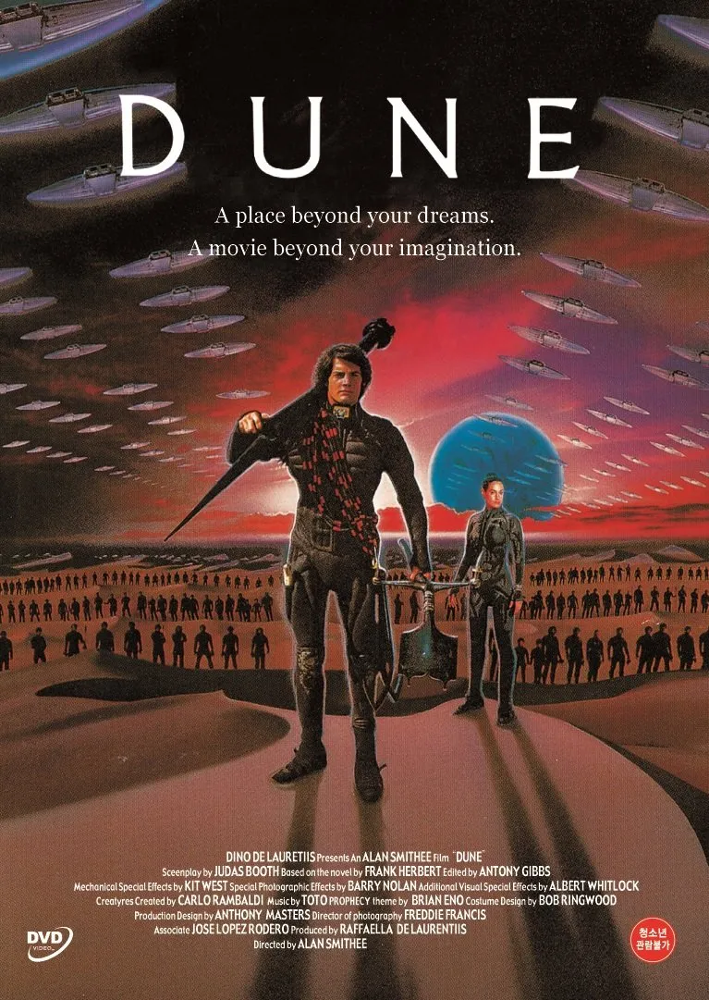

DUNE WEB
|  |
Podemos decir que fue la primera vez que alguien dio en el clavo al adaptar las novelas de Dune al formato cine. Al mano David Lynch, que es decir mucho, así como un elenco que para la época era sorprendentemente amplio y reconocido. Si hasta aparecía el gran Sting desempeñando uno de los papeles clave de la historia. En su día fue una incomprendida y el público no la respaldó, pero con el paso de los años ha ido ganándose un sitio dentro de ese extraño listado de películas que terminan siendo de culto. |
En el Año 10191 el desértico planeta Arrakis, feudo de la familia Harkonnen desde hace generaciones, queda en manos de la Casa de los Atreides por orden del emperador. Con ello les cede la explotación de las reservas de especia, la materia prima más valiosa de la galaxia, necesaria para los viajes interestelares y también una droga capaz de amplificar la conciencia y extender la vida. El duque Leto (Oscar Isaac), la dama Jessica (Rebecca Ferguson) y el hijo de ambos, Paul Atreides (Timothée Chalamet), llegan a Arrakis con la esperanza de mantener el buen nombre de su casa y ser fieles al emperador, pero pronto se verán envueltos en una trama de traiciones y engaños que les llevará a cuestionar su confianza entre sus más allegados y a valorar a los lugareños, los Fremen, una estirpe de habitantes del desierto con una estrecha relación con la especia. (FILMAFFINITY) |
|
|
Sabemos que la historia de Dune ha llegado únicamente a la mitad. Sitio en donde partimos en esta segunda parte con el barón Harkonnen controlando Arrakis tras el golpe de Estado a los Atreides. Por otro lado, dejamos a Paul Atreides en el desierto uniendo fuerzas con los Fremen. En esta segunda parte, seguiremos al joven en busca de vengar a su padre, traer la paz a su pueblo y postrarse cara a cara con su verdadero destino. |